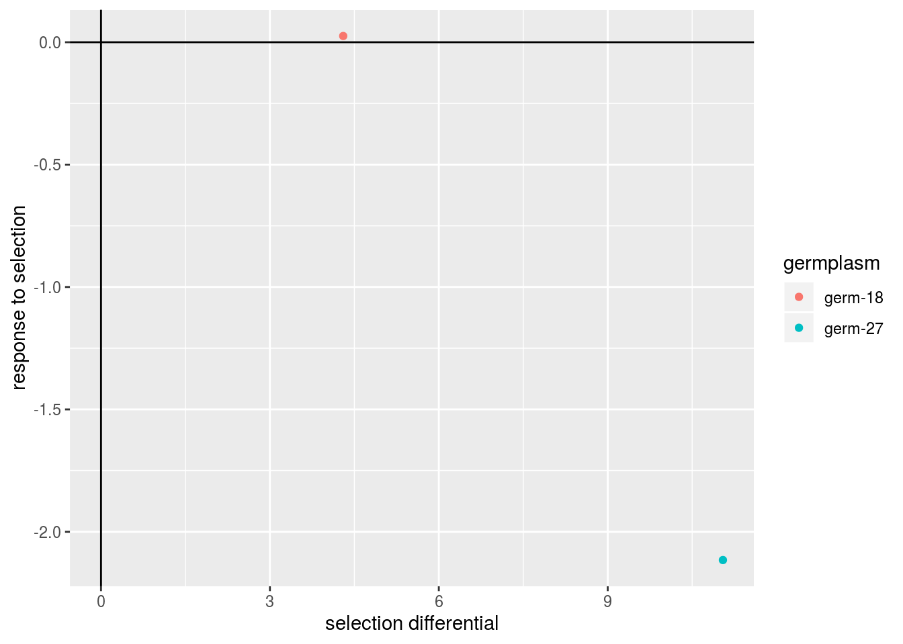
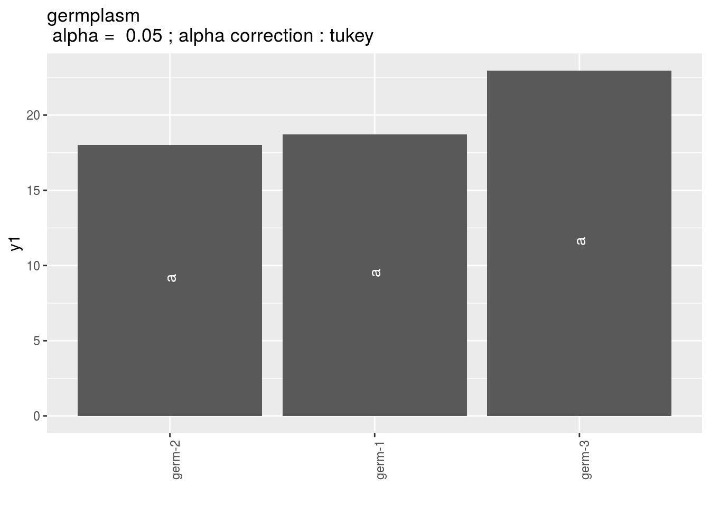

3.8 Family 4 of analysis : specific research questions on one farm or more
In this section, several models are proposed for specific research questions:
- Study response to selection (section 3.8.1) based on models from Family 1 of analysis presented in section 3.5
- Study local adaptation with two models: home away (section 3.8.2.2) and local foreign (section 3.8.2.3) based on fully-replicated design (D1) (section 3.2.1)
- Study intra germplasm variance with a dedicated model (section 3.8.3)
3.8.1 Study reponse to selection
For a given trait, selection differential corresponds to the difference between mean of the selected spikes and mean of the bulk (i.e. spikes that have not been selected). Response to selection correponds to the difference between mean of spikes coming from the selected spikes and the spikes coming from the bulk (Figure 3.26). Selection differential (\(S\)) and response to selection (\(R\)) are linked with the realized heritability (\(h^2_r\)): \(R = h^2_r \times S\).
Figure 3.26: Seletion differential (S) in 2014-2015 and response to selection (R) in 2015-2016. Circles and arrows in gray represent the seed-lots that have been sown in 2015 after harvest in 2015.(Rivière 2015)
3.8.1.1 Workflow and function relations in PPBstats regarding response to selection analysis
Figure 3.27 displays the functions and their relationships. Table 3.4 describes each of the main functions.
You can have more information for each function by typing ?function_name in your R session.
Figure 3.27: Main functions used in the workflow to study response to selection.
| function name | description |
|---|---|
design_experiment |
Provides experimental design for the different situations corresponding to the choosen family of analysis |
format_data_PPBstats |
Check and format the data to be used in PPBstats functions |
plot |
Build ggplot objects to visualize output |
3.8.1.2 Steps with PPBstats
To study response to selection, you can follow three steps (Figure 3.27):
- Format the data with
format_data_PPBstats() - Describe the data with
plot() - Get mean comparison from family 1’s model as explained in section 3.5 by
- running the model
- get mean comparisons
- use
plot()
3.8.1.3 Format data
In this section, the data set used is coming from data_model_GxE (section 3.6.3) with three dedicated columns:
groupwhich represents differential selection (S) or reponse to selection (R)versionwhich represents bouquet or vrac.expe_id: an id with- S couple and R couple (i.e. four rows) OR
- S couple (i.e. two rows) OR
- R couple (i.e. two rows)
expe_id is useful for example if there are several selection in one germplasm or if there are several origin for a given germplasm.
3.8.1.4 Describe and get mean comparison from family 1’s model
For all model, stars on a pair of entries corresponds to the pvalue:
| pvalue | stars |
|---|---|
| \(< 0.001\) | *** |
| \([0.001 , 0.05]\) | ** |
| \([0.05 , 0.01]\) | * |
| \(> 0.01\) | . |
3.8.1.4.1 Classic anova model
To Do !!!
#data(data_agro_SR_1)
#data_agro_SR_1 = format_data_PPBstats(data_agro_SR_1, type = "data_agro_SR")3.8.1.4.2 Spatial analysis model
To Do !!!
#data(data_agro_SR_2)
#data_agro_SR_2 = format_data_PPBstats(data_agro_SR_2, type = "data_agro_SR")3.8.1.4.3 Mixed model for incomplete block design
To Do !!!
#data(data_agro_SR_3)
#data_agro_SR_3 = format_data_PPBstats(data_agro_SR_3, type = "data_agro_SR")3.8.1.4.4 Hierarchical Bayesian intra-location model
data(data_agro_SR_4)
data_agro_SR_4 = format_data_PPBstats(data_agro_SR_4, type = "data_agro_SR")## Warning in format_data_PPBstats.data_agro(data): Column "long" is needed to
## get map and not present in data.## Warning in format_data_PPBstats.data_agro(data): Column "lat" is needed to
## get map and not present in data.## data has been formated for PPBstats functions.head(data_agro_SR_4)## seed_lot location year germplasm block X Y expe_id group
## 1 germ-25_loc-1_2005_0001 loc-1 2005 germ-25 1 1 a id_1 S
## 2 germ-26_loc-1_2005_0001 loc-1 2005 germ-26 1 2 b id_1 S
## 3 germ-27_loc-1_2005_0001 loc-1 2005 germ-27 1 3 c id_1 R
## 4 germ-28_loc-1_2005_0001 loc-1 2005 germ-28 1 4 d id_1 R
## 5 germ-25_loc-1_2005_0001 loc-1 2005 germ-25 2 5 e id_2 S
## 6 germ-26_loc-1_2005_0001 loc-1 2005 germ-26 2 6 f id_2 S
## version tkw tkw$date tkw$date_julian
## 1 bouquet 72.09900 2017-07-22 202
## 2 vrac 61.05274 2017-07-22 202
## 3 bouquet 62.99350 2017-07-22 202
## 4 vrac 65.10909 2017-07-22 202
## 5 bouquet 77.01361 2017-07-22 202
## 6 vrac 64.10541 2017-07-22 202First, describe the data.
p = plot(data_agro_SR_4, vec_variables = "tkw", plot_type = "barplot")## Regarding post_hoc analysis, 2 couples S and R are displayed. 5 S without corresponding R or R without corresponding S are not displayed.The plot has two lists:
- one for each id where each element of the list is an expe_id.
- one on post hoc analysis with all couple S (election differential) and R (response to selection) where each element of the list refer to germplasm, location or year
p$tkw$analysis_for_each_id$id_1## Warning: Removed 4 rows containing missing values (geom_errorbar).p$tkw$post_hoc_analysis$germplasm
In addition, the realized heritability (\(h^2_r\): \(R = h^2_r \times S\)) can be displayed.
p = plot(data_agro_SR_4, vec_variables = "tkw", plot_type = "barplot", heritability = TRUE)## Regarding post_hoc analysis, 2 couples S and R are displayed. 5 S without corresponding R or R without corresponding S are not displayed.p$tkw$analysis_for_each_id$id_1## Warning: Removed 4 rows containing missing values (geom_errorbar).p$tkw$post_hoc_analysis$germplasmIn order to add significance differences from the Hierarchical Bayesian intra-location model presented in section 3.5.6, the argument mean_comparisons must be filled with the output of mean_comparisons of the model.
The pvalue is computed as describe in Section 3.1.2.2.3 if the parameters have been estimated with the model.
load("./data_PPBstats/out_mean_comparisons_model_bh_intra_location_mu.RData") # To save time
p = plot(data_agro_SR_4,
mean_comparison = out_mean_comparisons_model_bh_intra_location_mu,
vec_variables = "tkw",
plot_type = "barplot")## Regarding post_hoc analysis, 2 couples S and R are displayed. 5 S without corresponding R or R without corresponding S are not displayed.p$tkw$analysis_for_each_id$id_1## Warning: Removed 4 rows containing missing values (geom_errorbar).
For environments where MCMC did not converge or without environments, it is a @ref(t.test) which is perform when there are more than 1 obervation for a given seed lot.
p$tkw$analysis_for_each_id$id_1## Warning: Removed 4 rows containing missing values (geom_errorbar).By setting heritability = TRUE, the realized heritability is displayed.
3.8.2 Study local adaptation
3.8.2.1 Workflow and function relations in PPBstats regarding local adaptation analysis
Figure 3.28 displays the functions and their relationships. Table 3.5 describes each of the main functions.
You can have more information for each function by typing ?function_name in your R session.
Note that check_model(), mean_comparison() and plot() are S3 method.
Therefore, you should type ?check_model, ?mean_comparison or ?plot.PPBstats to have general features and then see in details for specific functions.
Figure 3.28: Main functions used in the workflow to study local adaptation.
| function name | description |
|---|---|
design_experiment |
Provides experimental design for the different situations corresponding to the choosen family of analysis |
format_data_PPBstats |
Check and format the data to be used in PPBstats functions |
HA_to_LF |
Transform home away data to local foreign data |
LF_to_HA |
Transform local foreign data to home away data |
model_home_away |
Run home away model |
model_local_foreign |
Run local foreign model |
check_model |
Check if the model went well |
mean_comparisons |
Get mean comparisons |
plot |
Build ggplot objects to visualize output |
3.8.2.2 Home away
Home away analysis allows to study local adaptation. Away in a location refers to a germplasm that has not been grown or selected in a given location. Home in a location refers to a germplasm that has been grown or selected in a given location.
The following model take into account germplasm and location effects in order to better study version (home or away) effect (Blanquart et al. 2013). The model is based on frequentist statistics (section 3.1.2.1).
\(Y_{ijkm} = \mu + \alpha_i + \theta_j + \omega_{k_{ij}} + (\omega \times \alpha)_{k_{ij}j} + rep(\theta)_{mj} + \varepsilon_{ijkm}; \quad \varepsilon_{ijkm} \sim \mathcal{N} (0,\sigma^2)\)
with
- \(Y_{ijkm}\) the phenotypic value for replication \(m\), germplasm \(i\) and location \(j\), and version \(k\),
- \(\mu\) the general mean,
- \(\alpha_i\) the effect of germplasm \(i\),
- \(\theta_j\) the effect of location \(j\),
- \(\omega_{k_{ij}}\) the effect of version, home or away for a germplasm \(i\) in location \(j\),
- \((\omega \times \theta)_{k_{ij}j}\) the interaction effect of version \(\times\) location,
- \(rep(\theta)_{mj}\) the effect of the replication \(m\) nested in location,
- \(\varepsilon_{ijkm}\) the residuals.
The comparisons of all germplasm in all location in sympatric or allopatric situation (measured by version effect \(\omega_{k_{ij}}\)) give a glocal measure of local adaptation (Blanquart et al. 2013). Interaction effect \((\omega \times \alpha)_{k_{ij}j}\) give information on specific adaptation to each location.
If there are more than one year, then the model can be written :
\(Y_{ijklm} = \mu + \alpha_i + \theta_j + \beta_l + \omega_{k_{ij}} + (\theta \times \beta)_{jl} + (\omega \times \alpha)_{k_{ij}j} + rep(\theta \times \beta)_{mjl} + (\omega \times \alpha \times \beta)_{k_{ij}jl} + \varepsilon_{ijklm}; \quad \varepsilon_{ijklm} \sim \mathcal{N} (0,\sigma^2)\)
with
- \(Y_{ijklm}\) the phenotypic value for replication \(m\), germplasm \(i\) and location \(j\), year \(l\) and version \(k\),
- \(\mu\) the general mean,
- \(\alpha_i\) the effect of germplasm \(i\),
- \(\theta_j\) the effect of location \(j\),
- \(\beta_l\) the effect of year \(l\),
- \(\omega_{k_{ij}}\) the effect of version, home or away for a germplasm \(i\) in location \(j\),
- \((\theta \times \beta)_{jl}\) the interaction effect of location \(\times\) year,
- \((\omega \times \theta)_{k_{ij}j}\) the interaction effect of version \(\times\) location,
- \(rep(\theta \times \beta)_{mjl}\) the effect of the replication \(m\) nested in location \(\times\) year,
- \((\omega \times \theta \times \beta)_{k_{ij}jl}\) the interaction effect of version \(\times\) location \(\times\) year,
- \(\varepsilon_{ijklm}\) the residuals.
Interaction \((\omega \times \theta \times \beta)_{k_{ij}jl}\) give information on specific adaptation to each location for a given year.
A type III anova is done here as the data are not orthogonal.
3.8.2.2.1 Steps with PPBstats
For home away analysis, you can follow these steps (Figure 3.28):
- Format the data with
format_data_PPBstats() - describe the data with
plot() - Run the model with
model_home_away() - Check model outputs with graphs to know if you can continue the analysis with
check_model()and vizualise it withplot() - Get mean comparisons for each factor with
mean_comparisons()and vizualise it withplot()
3.8.2.2.2 Format data
data("data_agro_HA")
data_agro_HA = format_data_PPBstats(data_agro_HA, type = "data_agro_HA")## Warning in format_data_PPBstats.data_agro(data): Column "long" is needed to
## get map and not present in data.## Warning in format_data_PPBstats.data_agro(data): Column "lat" is needed to
## get map and not present in data.## data has been formated for PPBstats functions.head(data_agro_HA)## seed_lot location year germplasm block X Y origin version
## 1 germ-1_loc-1_2005_0001 loc-1 2005 germ-1 1 A 2 loc-1 home
## 2 germ-1_loc-1_2005_0001 loc-1 2005 germ-1 2 C 6 loc-1 home
## 3 germ-1_loc-1_2005_0001 loc-1 2005 germ-1 3 B 13 loc-1 home
## 4 germ-2_loc-1_2005_0001 loc-1 2005 germ-2 1 D 5 loc-2 away
## 5 germ-2_loc-1_2005_0001 loc-1 2005 germ-2 2 B 9 loc-2 away
## 6 germ-2_loc-1_2005_0001 loc-1 2005 germ-2 3 C 14 loc-2 away
## y1 y1$date y2 y2$date y3 y3$date
## 1 23.03428 2017-07-15 37.38970 2017-07-15 63.39528 2017-07-15
## 2 17.23622 2017-07-15 42.90576 2017-07-15 66.87962 2017-07-15
## 3 25.33605 2017-07-15 31.87826 2017-07-15 60.63063 2017-07-15
## 4 12.48506 2017-07-15 46.09260 2017-07-15 55.18082 2017-07-15
## 5 13.37886 2017-07-15 46.51270 2017-07-15 51.88016 2017-07-15
## 6 17.64994 2017-07-15 39.96316 2017-07-15 53.13201 2017-07-15
## y1$date_julian y2$date_julian y3$date_julian
## 1 195 195 195
## 2 195 195 195
## 3 195 195 195
## 4 195 195 195
## 5 195 195 195
## 6 195 195 195Where version represents away or home and group represents the location where the germplasm come from.
3.8.2.2.3 Describe the data
p = plot(data_agro_HA, vec_variables = "y1", plot_type = "barplot")p is a list with as many element as variable.
For each variable, there are three elements :
- A single plot with version for all germplasm merged
p$y1$home_away_merged
- A single plot with version for each germplasm
p$y1$home_away_merged_per_germplasm- A list of plots for each germplasm with all version separated
p$y1$home_away_per_germplasm$`germ-1`$versionp$y1$home_away_per_germplasm$`germ-1`$originIf you have several year in the data, you can set argument f_gris = "year" in order to have plot for each year.
In the example below t is not really relevent beaause there is only one year in the data set!
p = plot(data_agro_HA, vec_variables = "y1", plot_type = "barplot", f_grid = "year")
p$y1$home_away_merged_per_germplasm3.8.2.2.4 Run the model
To run HOME AWAY model on the dataset, use the function model_home_away.
You can run it on one variable.
out_ha = model_home_away(data_agro_HA, "y1")out_ha is a list containing three elements :
info: a list with variable
out_ha$info## $variable
## [1] "y1"ANOVAa list with five elements :model
out_ha$ANOVA$model## ## Call: ## stats::lm(formula = variable ~ location + germplasm + version + ## version:germplasm + location/block, data = data) ## ## Coefficients: ## (Intercept) locationloc-2 ## 15.3748 8.7827 ## locationloc-3 germplasmgerm-2 ## 4.2256 -0.6989 ## germplasmgerm-3 versionhome ## 4.2563 6.0237 ## germplasmgerm-2:versionhome germplasmgerm-3:versionhome ## -5.6698 -15.4536 ## locationloc-1:block2 locationloc-2:block2 ## 0.5964 -1.8569 ## locationloc-3:block2 locationloc-1:block3 ## -0.4242 0.8148 ## locationloc-2:block3 locationloc-3:block3 ## -0.3666 -3.3060anova_model
out_ha$ANOVA$anova_model## Anova Table (Type III tests) ## ## Response: variable ## Sum Sq Df F value Pr(>F) ## (Intercept) 327.30 1 17.4142 0.001093 ** ## location 86.82 2 2.3096 0.138584 ## germplasm 64.74 2 1.7222 0.217027 ## version 43.54 1 2.3167 0.151940 ## germplasm:version 122.23 2 3.2516 0.071605 . ## location:block 26.28 6 0.2331 0.958038 ## Residuals 244.33 13 ## --- ## Signif. codes: 0 '***' 0.001 '**' 0.01 '*' 0.05 '.' 0.1 ' ' 1
3.8.2.2.5 Check and visualize model outputs
The tests to check the model are explained in section 3.1.2.1.2.
3.8.2.2.5.1 Check the model
Once the model is run, it is necessary to check if the outputs can be taken with confidence.
This step is needed before going ahead in the analysis (in fact, object used in the next functions must come from check_model()).
out_check_ha = check_model(out_ha)out_check_ha is a list containing four elements :
model_home_awaythe output from the modeldata_ggplota list containing information for ggplot:data_ggplot_residualsa list containing :data_ggplot_normalitydata_ggplot_skewness_testdata_ggplot_kurtosis_testdata_ggplot_shapiro_testdata_ggplot_qqplot
data_ggplot_variability_repartition_piedata_ggplot_var_intra
3.8.2.2.5.2 Visualize outputs
Once the computation is done, you can visualize the results with plot()
p_out_check_ha = plot(out_check_ha)p_out_check_ha is a list with:
residualshistogram: histogram with the distribution of the residuals
p_out_check_ha$residuals$histogram## `stat_bin()` using `bins = 30`. Pick better value with `binwidth`.qqplot
p_out_check_ha$residuals$qqplot
points
p_out_check_ha$residuals$pointsvariability_repartition: pie with repartition of SumSq for each factor
p_out_check_ha$variability_repartitionvariance_intra_germplasm: repartition of the residuals for each germplasm (see Details for more information) With the hypothesis than the micro-environmental variation is equaly distributed on all the individuals (i.e. all the plants), the distribution of each germplasm represent the intra-germplasm variance. This has to been seen with caution:- If germplasm have no intra-germplasm variance (i.e. pure line or hybrides) then the distribution of each germplasm represent only the micro-environmental variation.
- If germplasm have intra-germplasm variance (i.e. population such as landraces for example) then the distribution of each germplasm represent the micro-environmental variation plus the intra-germplasm variance.
p_out_check_ha$variance_intra_germplasm3.8.2.2.6 Get and visualize mean comparisons
The method to compute mean comparison are explained in section 3.1.2.1.3. Here, the computation is based on emmeans.
3.8.2.2.6.1 Get mean comparisons
Get mean comparisons with mean_comparisons().
out_mean_comparisons_ha = mean_comparisons(out_check_ha, p.adj = "tukey")## NOTE: A nesting structure was detected in the fitted model:
## block %in% location## NOTE: Results may be misleading due to involvement in interactions## NOTE: A nesting structure was detected in the fitted model:
## block %in% location## NOTE: Results may be misleading due to involvement in interactions## NOTE: A nesting structure was detected in the fitted model:
## block %in% location## NOTE: Results may be misleading due to involvement in interactions## NOTE: A nesting structure was detected in the fitted model:
## block %in% location## Warning: 'CLD' will be deprecated. Its use is discouraged.
## See '? CLD' for an explanation. Use 'pwpp' or 'multcomp::cld' instead.
## Warning: 'CLD' will be deprecated. Its use is discouraged.
## See '? CLD' for an explanation. Use 'pwpp' or 'multcomp::cld' instead.out_mean_comparisons_ha is a list of five elements:
info: a list with variabledata_ggplot_LSDbarplot_version:germplasmdata_ggplot_LSDbarplot_germplasmdata_ggplot_LSDbarplot_locationdata_ggplot_LSDbarplot_yearin case there is year in the model
3.8.2.2.6.2 Visualize mean comparisons
p_out_mean_comparisons_ha = plot(out_mean_comparisons_ha)p_out_mean_comparisons_ha is a list of three elements with barplots :
For each element of the list, there are as many graph as needed with nb_parameters_per_plot parameters per graph.
Letters are displayed on each bar. Parameters that do not share the same letters are different regarding type I error (alpha) and alpha correction.
The error I (alpha) and the alpha correction are displayed in the title.
When comparing version for each germplasm, differences are displayed with stars. The stars corresponds to the pvalue:
| pvalue | stars |
|---|---|
| \(< 0.001\) | *** |
| \([0.001 , 0.05]\) | ** |
| \([0.05 , 0.01]\) | * |
| \(> 0.01\) | . |
version:germplasm: mean comparison for version for each germplasm
pvg = p_out_mean_comparisons_ha$"version:germplasm"
pvggermplasm: mean comparison for germplasm
pg = p_out_mean_comparisons_ha$germplasm
pg$`1`location: mean comparison for location
pl = p_out_mean_comparisons_ha$location
pl$`1`year: mean comparison for year in case there is year in the model.
3.8.2.2.7 post hoc analysis to visualize variation repartition for several variables
First run the models
out_ha_2 = model_home_away(data_agro_HA, "y2")
out_ha_3 = model_home_away(data_agro_HA, "y3")Then check the models
out_check_ha_2 = check_model(out_ha_2)
out_check_ha_3 = check_model(out_ha_3)list_out_check_model = list("ha_1" = out_check_ha, "ha_2" = out_check_ha_2, "ha_3" = out_check_ha_3)
post_hoc_variation(list_out_check_model)
3.8.2.2.8 Apply the workflow to several variables
If you wish to apply the AMMI workflow to several variables, you can use lapply() with the following code :
workflow_home_away = function(x, data){
out_home_away = model_home_away(data, variable = x)
out_check_home_away = check_model(out_home_away)
p_out_check_home_away = plot(out_check_home_away)
out_mean_comparisons_home_away = mean_comparisons(out_check_home_away, p.adj = "bonferroni")
p_out_mean_comparisons_home_away = plot(out_mean_comparisons_home_away)
out = list(
"out_home_away" = out_home_away,
"out_check_home_away" = out_check_home_away,
"p_out_check_home_away" = p_out_check_home_away,
"out_mean_comparisons_home_away" = out_mean_comparisons_home_away,
"p_out_mean_comparisons_home_away" = p_out_mean_comparisons_home_away
)
return(out)
}
vec_variables = c("y1", "y2", "y3")
out = lapply(vec_variables, workflow_home_away, data_agro_HA)## NOTE: A nesting structure was detected in the fitted model:
## block %in% location## NOTE: Results may be misleading due to involvement in interactions## NOTE: A nesting structure was detected in the fitted model:
## block %in% location## NOTE: Results may be misleading due to involvement in interactions## NOTE: A nesting structure was detected in the fitted model:
## block %in% location## NOTE: Results may be misleading due to involvement in interactions## NOTE: A nesting structure was detected in the fitted model:
## block %in% location## Warning: 'CLD' will be deprecated. Its use is discouraged.
## See '? CLD' for an explanation. Use 'pwpp' or 'multcomp::cld' instead.
## Warning: 'CLD' will be deprecated. Its use is discouraged.
## See '? CLD' for an explanation. Use 'pwpp' or 'multcomp::cld' instead.## NOTE: A nesting structure was detected in the fitted model:
## block %in% location## NOTE: Results may be misleading due to involvement in interactions## NOTE: A nesting structure was detected in the fitted model:
## block %in% location## NOTE: Results may be misleading due to involvement in interactions## NOTE: A nesting structure was detected in the fitted model:
## block %in% location## NOTE: Results may be misleading due to involvement in interactions## NOTE: A nesting structure was detected in the fitted model:
## block %in% location## Warning: 'CLD' will be deprecated. Its use is discouraged.
## See '? CLD' for an explanation. Use 'pwpp' or 'multcomp::cld' instead.
## Warning: 'CLD' will be deprecated. Its use is discouraged.
## See '? CLD' for an explanation. Use 'pwpp' or 'multcomp::cld' instead.## NOTE: A nesting structure was detected in the fitted model:
## block %in% location## NOTE: Results may be misleading due to involvement in interactions## NOTE: A nesting structure was detected in the fitted model:
## block %in% location## NOTE: Results may be misleading due to involvement in interactions## NOTE: A nesting structure was detected in the fitted model:
## block %in% location## NOTE: Results may be misleading due to involvement in interactions## NOTE: A nesting structure was detected in the fitted model:
## block %in% location## Warning: 'CLD' will be deprecated. Its use is discouraged.
## See '? CLD' for an explanation. Use 'pwpp' or 'multcomp::cld' instead.
## Warning: 'CLD' will be deprecated. Its use is discouraged.
## See '? CLD' for an explanation. Use 'pwpp' or 'multcomp::cld' instead.names(out) = vec_variables
list_out_check_model = list("ha_1" = out$y1$out_check_home_away, "ha_2" = out$y2$out_check_home_away, "ha_3" = out$y3$out_check_home_away)
p_post_hoc_variation = post_hoc_variation(list_out_check_model)3.8.2.3 Local foreign
Another way to study local adaptation of germplasm to their location from origin is to compare germplasm behavior on their original location with their behavior on other locations : if the first is greater than the second then the germplasm is more adapted to its original location rather than to the other locations.
Local in a location refers to a germplasm that has been grown or selected in a given location. Foreign in a location refers to a germplasm that has not been grown or selected in a given location.
The following model take into account germplasm and location effects in order to better study version (local or foreign) effect (Blanquart et al. 2013):
\(Y_{ijkm} = \mu + \alpha_i + \theta_j + \omega_{k_{ij}} + (\omega \times \theta)_{k_{ij}j} + rep(\theta)_{mj} + \varepsilon_{ijkm}; \quad \varepsilon_{ijkm} \sim \mathcal{N} (0,\sigma^2)\)
with
- \(Y_{ijkm}\) the phenotypic value for replication \(m\), germplasm \(i\) and location \(j\), and version \(k\),
- \(\mu\) the general mean,
- \(\alpha_i\) the effect of germplasm \(i\),
- \(\theta_j\) the effect of location \(j\),
- \(\omega_{k_{ij}}\) the effect of version, local or foreign for a germplasm \(i\) in location \(j\),
- \((\omega \times \alpha)_{k_{ij}j}\) the interaction effect of version \(\times\) germplasm,
- \(rep(\theta)_{mj}\) the effect of the replication \(m\) nested in location,
- \(\varepsilon_{ijkm}\) the residuals.
As for home away model, version effect \(\omega_{k_{ij}}\)) give a glocal measure of local adaptation of germplasm to their location of origin (Blanquart et al. 2013). Interaction effect \((\omega \times \theta)_{k_{ij}j}\) give information on specific adaptation to each germplasm.
If there are more than one year, then the model can be written :
\(Y_{ijklm} = \mu + \alpha_i + \theta_j + \beta_l + \omega_{k_{ij}} + (\theta \times \beta)_{jl} + (\omega \times \alpha)_{k_{ij}i} + rep(\theta \times \beta)_{mjl} + (\omega \times \alpha \times \beta)_{k_{ij}il} + \varepsilon_{ijklm}; \quad \varepsilon_{ijklm} \sim \mathcal{N} (0,\sigma^2)\)
with
- \(Y_{ijklm}\) the phenotypic value for replication \(m\), germplasm \(i\) and location \(j\), year \(l\) and version \(k\),
- \(\mu\) the general mean,
- \(\alpha_i\) the effect of germplasm \(i\),
- \(\theta_j\) the effect of location \(j\),
- \(\beta_l\) the effect of year \(l\),
- \(\omega_{k_{ij}}\) the effect of version, home or away for a germplasm \(i\) in location \(j\),
- ()_{jl} the interaction effect of location \(\times\) year,
- (){k{ij}i} the interaction effect of version \(\times\) germplasm,
- rep()_{mjl} the effect of the replication \(m\) nested in location \(\times\) year,
- (){k{ij}il} the interaction effect of version \(\times\) germplasm \(\times\) year,
- _{ijklm} the residuals.
Interaction \((\omega \times \theta \times \beta)_{k_{ij}jl}\) give information on specific adaptation to each germplasm for a given year.
A type III anova is done here as the data are not orthogonal.
3.8.2.3.1 Steps with PPBstats
For local foreign analysis, you can follow these steps (Figure 3.28):
- Format the data with
format_data_PPBstats() - describe the data with
plot() - Run the model with
model_local_foreign() - Check model outputs with graphs to know if you can continue the analysis with
check_model()and vizualise it withplot() - Get mean comparisons for each factor with
mean_comparisons()and vizualise it withplot()
3.8.2.3.2 Format data
data("data_agro_LF")
data_agro_LF = format_data_PPBstats(data_agro_LF, type = "data_agro_LF")## Warning in format_data_PPBstats.data_agro(data): Column "long" is needed to
## get map and not present in data.## Warning in format_data_PPBstats.data_agro(data): Column "lat" is needed to
## get map and not present in data.## data has been formated for PPBstats functions.head(data_agro_LF)## seed_lot location year germplasm block X Y origin version
## 1 germ-1_loc-1_2005_0001 loc-1 2005 germ-1 1 A 2 loc-1 local
## 2 germ-1_loc-1_2005_0001 loc-1 2005 germ-1 2 C 6 loc-1 local
## 3 germ-1_loc-1_2005_0001 loc-1 2005 germ-1 3 B 13 loc-1 local
## 4 germ-2_loc-1_2005_0001 loc-1 2005 germ-2 1 D 5 loc-2 foreign
## 5 germ-2_loc-1_2005_0001 loc-1 2005 germ-2 2 B 9 loc-2 foreign
## 6 germ-2_loc-1_2005_0001 loc-1 2005 germ-2 3 C 14 loc-2 foreign
## y1 y1$date y2 y2$date y3 y3$date
## 1 23.03428 2017-07-15 37.38970 2017-07-15 63.39528 2017-07-15
## 2 17.23622 2017-07-15 42.90576 2017-07-15 66.87962 2017-07-15
## 3 25.33605 2017-07-15 31.87826 2017-07-15 60.63063 2017-07-15
## 4 12.48506 2017-07-15 46.09260 2017-07-15 55.18082 2017-07-15
## 5 13.37886 2017-07-15 46.51270 2017-07-15 51.88016 2017-07-15
## 6 17.64994 2017-07-15 39.96316 2017-07-15 53.13201 2017-07-15
## y1$date_julian y2$date_julian y3$date_julian
## 1 195 195 195
## 2 195 195 195
## 3 195 195 195
## 4 195 195 195
## 5 195 195 195
## 6 195 195 1953.8.2.3.3 Describe the data
p = plot(data_agro_LF, vec_variables = "y1", plot_type = "barplot")p is a list with as many element as variable.
For each variable, there are three elements :
- A single plot with version for all location merged
p$y1$local_foreign_merged- A single plot with version for each location
p$y1$local_foreign_merged_per_location- plot for each location with all version separated
p$y1$local_foreign_per_location$`loc-1`$version
p$y1$local_foreign_per_location$`loc-1`$originIf you have several year in the data, you can set argument f_gris = "year" in order to have plot for each year.
In the example below t is not really relevent beaause there is only one year in the data set!
p = plot(data_agro_LF, vec_variables = "y1", plot_type = "barplot", f_grid = "year")
p$y1$local_foreign_merged_per_location3.8.2.3.4 Run the model
To run LOCAL FOREIGN model on the dataset, use the function model_local_foreign.
You can run it on one variable.
out_lf = model_local_foreign(data_agro_LF, "y1")out_lf is a list containing three elements :
info: a list with variable
out_lf$info## $variable
## [1] "y1"ANOVAa list with five elements :model
out_lf$ANOVA$model## ## Call: ## stats::lm(formula = variable ~ location + germplasm + version + ## version:location + location/block, data = data) ## ## Coefficients: ## (Intercept) locationloc-2 ## 15.3748 8.7827 ## locationloc-3 germplasmgerm-2 ## 4.2256 -0.6989 ## germplasmgerm-3 versionlocal ## 4.2563 6.0237 ## locationloc-2:versionlocal locationloc-3:versionlocal ## -5.6698 -15.4536 ## locationloc-1:block2 locationloc-2:block2 ## 0.5964 -1.8569 ## locationloc-3:block2 locationloc-1:block3 ## -0.4242 0.8148 ## locationloc-2:block3 locationloc-3:block3 ## -0.3666 -3.3060anova_model
out_lf$ANOVA$anova_model## Anova Table (Type III tests) ## ## Response: variable ## Sum Sq Df F value Pr(>F) ## (Intercept) 327.30 1 17.4142 0.001093 ** ## location 86.82 2 2.3096 0.138584 ## germplasm 64.74 2 1.7222 0.217027 ## version 43.54 1 2.3167 0.151940 ## location:version 122.23 2 3.2516 0.071605 . ## location:block 26.28 6 0.2331 0.958038 ## Residuals 244.33 13 ## --- ## Signif. codes: 0 '***' 0.001 '**' 0.01 '*' 0.05 '.' 0.1 ' ' 1
3.8.2.3.5 Check and visualize model outputs
The tests to check the model are explained in section 3.1.2.1.2.
3.8.2.3.5.1 Check the model
Once the model is run, it is necessary to check if the outputs can be taken with confidence.
This step is needed before going ahead in the analysis (in fact, object used in the next functions must come from check_model()).
out_check_lf = check_model(out_lf)out_check_lf is a list containing four elements :
model_local_foreignthe output from the modeldata_ggplota list containing information for ggplot:data_ggplot_residualsa list containing :data_ggplot_normalitydata_ggplot_skewness_testdata_ggplot_kurtosis_testdata_ggplot_shapiro_testdata_ggplot_qqplot
data_ggplot_variability_repartition_piedata_ggplot_var_intra
3.8.2.3.5.2 Visualize outputs
Once the computation is done, you can visualize the results with plot()
p_out_check_lf = plot(out_check_lf)p_out_check_lf is a list with:
residualshistogram: histogram with the distribution of the residuals
p_out_check_lf$residuals$histogram## `stat_bin()` using `bins = 30`. Pick better value with `binwidth`.
qqplot
p_out_check_lf$residuals$qqplotpoints
p_out_check_lf$residuals$points
variability_repartition: pie with repartition of SumSq for each factor
p_out_check_lf$variability_repartitionvariance_intra_germplasm: repartition of the residuals for each germplasm (see Details for more information) With the hypothesis than the micro-environmental variation is equaly distributed on all the individuals (i.e. all the plants), the distribution of each germplasm represent the intra-germplasm variance. This has to been seen with caution:- If germplasm have no intra-germplasm variance (i.e. pure line or hybrides) then the distribution of each germplasm represent only the micro-environmental variation.
- If germplasm have intra-germplasm variance (i.e. population such as landraces for example) then the distribution of each germplasm represent the micro-environmental variation plus the intra-germplasm variance.
p_out_check_lf$variance_intra_germplasm
3.8.2.3.6 Get and visualize mean comparisons
The method to compute mean comparison are explained in section 3.1.2.1.3. Here, the computation is based on emmeans.
3.8.2.3.6.1 Get mean comparisons
Get mean comparisons with mean_comparisons().
out_mean_comparisons_lf = mean_comparisons(out_check_lf, p.adj = "tukey")## NOTE: A nesting structure was detected in the fitted model:
## block %in% location## NOTE: Results may be misleading due to involvement in interactions## NOTE: A nesting structure was detected in the fitted model:
## block %in% location
## NOTE: A nesting structure was detected in the fitted model:
## block %in% location## NOTE: Results may be misleading due to involvement in interactions## NOTE: A nesting structure was detected in the fitted model:
## block %in% location## Warning: 'CLD' will be deprecated. Its use is discouraged.
## See '? CLD' for an explanation. Use 'pwpp' or 'multcomp::cld' instead.
## Warning: 'CLD' will be deprecated. Its use is discouraged.
## See '? CLD' for an explanation. Use 'pwpp' or 'multcomp::cld' instead.out_mean_comparisons_lf is a list of five elements:
info: a list with variabledata_ggplot_LSDbarplot_version:germplasmdata_ggplot_LSDbarplot_germplasmdata_ggplot_LSDbarplot_locationdata_ggplot_LSDbarplot_yearin case there is year in the model
3.8.2.3.6.2 Visualize mean comparisons
p_out_mean_comparisons_lf = plot(out_mean_comparisons_lf)p_out_mean_comparisons_lf is a list of three elements with barplots :
For each element of the list, there are as many graph as needed with nb_parameters_per_plot parameters per graph.
Letters are displayed on each bar. Parameters that do not share the same letters are different regarding type I error (alpha) and alpha correction.
The error I (alpha) and the alpha correction are displayed in the title.
When comparing version for each germplasm, differences are displayed with stars. The stars corresponds to the pvalue:
| pvalue | stars |
|---|---|
| \(< 0.001\) | *** |
| \([0.001 , 0.05]\) | ** |
| \([0.05 , 0.01]\) | * |
| \(> 0.01\) | . |
version:germplasm: mean comparison for version for each location
pvg = p_out_mean_comparisons_lf$"version:location"
pvggermplasm: mean comparison for germplasm
pg = p_out_mean_comparisons_lf$germplasm
pg$`1`
location: mean comparison for location
pl = p_out_mean_comparisons_lf$location
pl$`1`year: mean comparison for year in case there is year in the model.
3.8.2.3.7 post hoc analysis to visualize variation repartition for several variables
First run the models
out_lf_2 = model_local_foreign(data_agro_LF, "y2")
out_lf_3 = model_local_foreign(data_agro_LF, "y3")Then check the models
out_check_lf_2 = check_model(out_lf_2)
out_check_lf_3 = check_model(out_lf_3)list_out_check_model = list("lf_1" = out_check_lf, "lf_2" = out_check_lf_2, "lf_3" = out_check_lf_3)
post_hoc_variation(list_out_check_model)3.8.2.3.8 Apply the workflow to several variables
If you wish to apply the AMMI workflow to several variables, you can use lapply() with the following code :
workflow_local_foreign = function(x, data){
out_local_foreign = model_local_foreign(data, variable = x)
out_check_local_foreign = check_model(out_local_foreign)
p_out_check_local_foreign = plot(out_check_local_foreign)
out_mean_comparisons_local_foreign = mean_comparisons(out_check_local_foreign, p.adj = "bonferroni")
p_out_mean_comparisons_local_foreign = plot(out_mean_comparisons_local_foreign)
out = list(
"out_local_foreign" = out_local_foreign,
"out_check_local_foreign" = out_check_local_foreign,
"p_out_check_local_foreign" = p_out_check_local_foreign,
"out_mean_comparisons_local_foreign" = out_mean_comparisons_local_foreign,
"p_out_mean_comparisons_local_foreign" = p_out_mean_comparisons_local_foreign
)
return(out)
}
vec_variables = c("y1", "y2", "y3")
out = lapply(vec_variables, workflow_local_foreign, data_agro_LF)## NOTE: A nesting structure was detected in the fitted model:
## block %in% location## NOTE: Results may be misleading due to involvement in interactions## NOTE: A nesting structure was detected in the fitted model:
## block %in% location
## NOTE: A nesting structure was detected in the fitted model:
## block %in% location## NOTE: Results may be misleading due to involvement in interactions## NOTE: A nesting structure was detected in the fitted model:
## block %in% location## Warning: 'CLD' will be deprecated. Its use is discouraged.
## See '? CLD' for an explanation. Use 'pwpp' or 'multcomp::cld' instead.
## Warning: 'CLD' will be deprecated. Its use is discouraged.
## See '? CLD' for an explanation. Use 'pwpp' or 'multcomp::cld' instead.## NOTE: A nesting structure was detected in the fitted model:
## block %in% location## NOTE: Results may be misleading due to involvement in interactions## NOTE: A nesting structure was detected in the fitted model:
## block %in% location
## NOTE: A nesting structure was detected in the fitted model:
## block %in% location## NOTE: Results may be misleading due to involvement in interactions## NOTE: A nesting structure was detected in the fitted model:
## block %in% location## Warning: 'CLD' will be deprecated. Its use is discouraged.
## See '? CLD' for an explanation. Use 'pwpp' or 'multcomp::cld' instead.
## Warning: 'CLD' will be deprecated. Its use is discouraged.
## See '? CLD' for an explanation. Use 'pwpp' or 'multcomp::cld' instead.## NOTE: A nesting structure was detected in the fitted model:
## block %in% location## NOTE: Results may be misleading due to involvement in interactions## NOTE: A nesting structure was detected in the fitted model:
## block %in% location
## NOTE: A nesting structure was detected in the fitted model:
## block %in% location## NOTE: Results may be misleading due to involvement in interactions## NOTE: A nesting structure was detected in the fitted model:
## block %in% location## Warning: 'CLD' will be deprecated. Its use is discouraged.
## See '? CLD' for an explanation. Use 'pwpp' or 'multcomp::cld' instead.
## Warning: 'CLD' will be deprecated. Its use is discouraged.
## See '? CLD' for an explanation. Use 'pwpp' or 'multcomp::cld' instead.names(out) = vec_variables
list_out_check_model = list("lf_1" = out$y1$out_check_local_foreign, "lf_2" = out$y2$out_check_local_foreign, "lf_3" = out$y3$out_check_local_foreign)
p_post_hoc_variation = post_hoc_variation(list_out_check_model)3.8.3 Study variance within germplasm
3.8.3.1 Theory of the model
The model is based on bayesian statistics (section 3.1.2.2).
The phenotypic value \(Y_{ijkl}\) for a given variable \(Y\), germplasm \(i\), environment \(j\), plot \(k\) and individual \(l\) is modeled as :
\(Y_{ijkl} = \mu_{ijk} + \varepsilon_{ijkl} ; \quad \varepsilon_{ijkl} \sim \mathcal{N} (0,\sigma^2_{ij})\),
Where \(Y_{ijkl}\) is the phenotypic value for germplasm \(i\), environment \(j\), plot \(k\) and individual \(l\); \(\mu_{ijk}\) is the mean of population \(i\) in environnement \(j\) and plot \(k\) (nested in environment \(j\)); \(\varepsilon_{ijkl}\) is what is not explained by the model in germplasm \(i\), environment \(j\), plot \(k\) and individual \(l\).
\(\varepsilon_{ijkl}\) is taken from a normal distribution, centered on 0 with variance \(\sigma^2_{ij}\)
With priors : \(\sigma^2_{ij} \sim 1/Gamma(10^{-6},10^{-6})\) and \(\mu_{ijk} \sim N(\mu_{.j.},10^{6})\)
\(\sigma^2_{ij}\) correspond to the intra-germplasm variance.
No specific experimental design is needed as long as there are several individuals measured for a given germplasm.
3.8.3.2 Steps with PPBstats
For variance intra analysis, you can follow these steps (Figure (fig:main-workflow)) :
- Format the data with
format_data_PPBstats() - Run the model with
model_bh_intra_location() - Check model outputs with graphs to know if you can continue the analysis with
check_model() - Get mean comparisons for each factor with
mean_comparisons()and vizualise it withplot()
3.8.3.3 Format the data
data(data_model_bh_variance_intra)
data_model_bh_variance_intra = format_data_PPBstats(data_model_bh_variance_intra, type = "data_agro")## Warning in format_data_PPBstats.data_agro(data): Column "long" is needed to
## get map and not present in data.## Warning in format_data_PPBstats.data_agro(data): Column "lat" is needed to
## get map and not present in data.## data has been formated for PPBstats functions.3.8.3.4 Run the model
To run the model , used the function model_bh_intra_location.
You can run it on one variable.
#out_vi = model_bh_intra_location(data_model_bh_variance_intra, variable = "spike_weight", nb_iterations = 100)3.8.3.5 Check and visualize model outputs
The tests to check the model are explained in section 3.1.2.2.2.
3.8.3.5.1 Check the model
Once the model is run, it is necessary to check if the outputs can be taken with confidence.
This step is needed before going ahead in the analysis (in fact, object used in the next functions must come from check_model).
#out_check_vi = check_model(out_vi)3.8.3.5.2 Visualize outputs
Once the computation is done, you can visualize the results with plot
#p_out_check_vi = plot(out_check_vi)3.8.3.6 Get and visualize mean comparisons
The method to compute mean comparison are explained in section ??.
3.8.3.6.1 Get mean comparisons
Get mean comparisons with mean_comparisons.
#out_mean_comparisons_vi = mean_comparisons(out_check_vi, parameter = "mu", p.adj = "soft.bonf")3.8.3.6.2 Visualize outputs
Once the computation is done, you can visualize the results with plot
#p_out_mc_vi = plot(out_mean_comparisons_vi)3.8.3.7 Apply the workflow to several variables
If you wish to apply the variance_intra workflow to several variables, you can use lapply with the following code :
workflow_model_variance_intra = function(x){
out_vi = model_bh_intra_location(data_variance_intra, variable = x)
out_check_vi = check_model(out_vi)
p_out_check_vi = plot(out_check_vi)
out_mean_comparisons_vi = mean_comparisons(out_check_vi, p.adj = "bonferroni")
p_out_mean_comparisons_vi = plot(out_mean_comparisons_vi)
out = list(
"out_vi" = out_vi,
"out_check_vi" = out_check_vi,
"p_out_check_vi" = p_out_check_vi,
"out_mean_comparisons_vi" = out_mean_comparisons_vi,
"p_out_mean_comparisons_vi" = p_out_mean_comparisons_vi
)
return(out)
}
## Not run because of memory and time issues !
# vec_variables = c("y1", "y2", "y3")
#
# out = lapply(vec_variables, workflow_model_variance_intra)
# names(out) = vec_variablesReferences
Blanquart, F., O. Kaltz, S.L. Nuismer, and S. Gandon. 2013. “A Practical Guide to Measuring Local Adaptation.” Ecology Letters 16 (9): 1195–1205. https://doi.org/10.1111/ele.12150.
Rivière, P. 2015. “Reponse to Selection Experiment.” https://github.com/priviere/module_figures_images_photos/releases/download/v4/SandR_EN.zip.